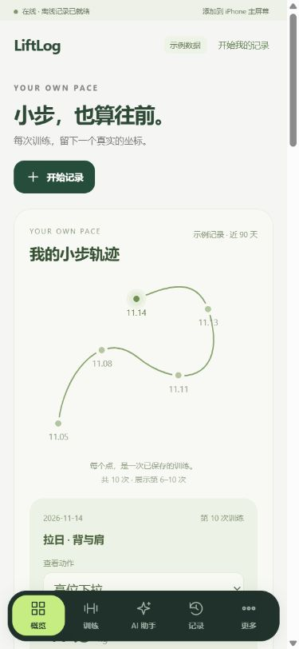
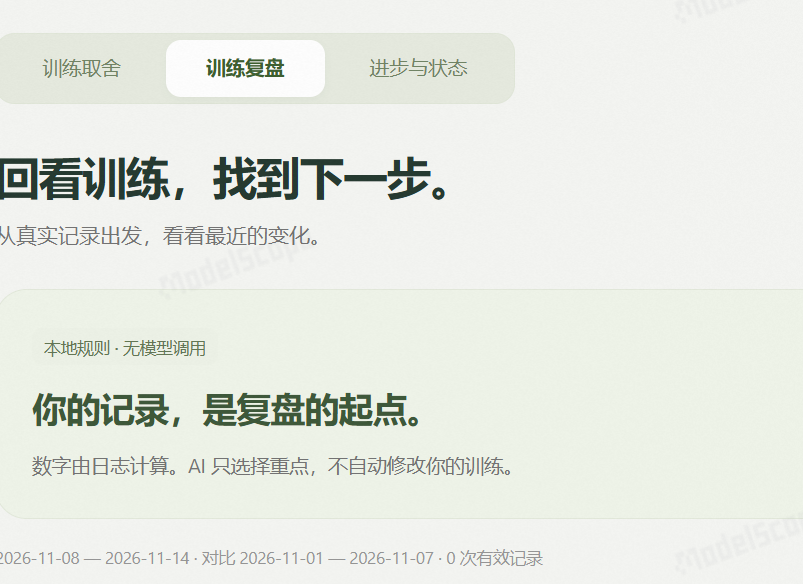
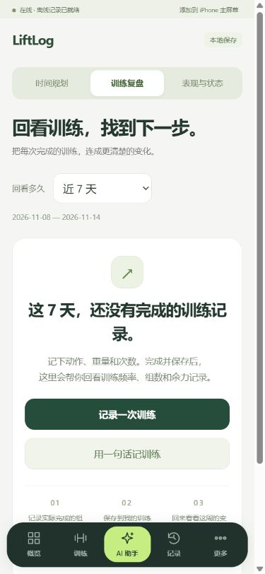

输入有负担
动作、重量、次数和余力需要逐项填写。待验证：一句话是否真的更省事。
AI APPLICATION · PRODUCT MANAGEMENT
一个面向增肌新手的 AI 训练记录与反馈产品。
从「替自己记下来」，走向「为一类用户设计」。
求职方向：AI 产品经理校招／实习
项目范围：问题定义、功能取舍、交互设计、AI 方案与评测、上线验收。编码与合成数据构建使用 AI 辅助。

THE CASE AT A GLANCE
核心假设：想增肌、变化慢的新手，既需要降低记录负担，也需要看懂每次训练留下的变化。项目先做好「记下来 → 核对 → 回看」的闭环，再验证它是否能带来持续使用。
这是一份早期产品案例，不把个人感受当作用户研究，也不把合成评测当作市场效果。
完整服务通过合成验收
含程序分流与字段校验；模型原始结果 44/48CPU 验收 P95 响应
48 条样本 · 2 核 / 8GB · 非生产压测自动化检查通过
121 项既有检查＋1 项离线导航回归；另做手机流程验收本轮付费 API 验收调用
Atlas 使用本地训练和自托管 CPU 推理USER & PROBLEM
切入的不是所有健身人群，而是愿意记录、但常觉得「变化太慢」的一类训练者。这个定位源于发起者的经历，目前还没有访谈样本支持，下一步需要验证普遍性。
当我完成一场训练时，我想用尽量少的操作留下可靠记录，并知道与过去相比发生了什么，让下次训练有一个清楚的参照。
动作、重量、次数和余力需要逐项填写。待验证：一句话是否真的更省事。
体重和外观变化慢。先展示记录中的可比变化，保留持平和下降。
提供上次记录、模板和时间规划。先验证复用，不直接承诺提升留存。
市场参照：Hevy 和 Strong 已有成熟的记录、历史与进步追踪能力。因此，本项目不把常规图表称为创新；重点验证中文口语记录和可追溯反馈的组合价值。参照的是官方功能页，未声称完整竞品实测。
把 Atlas 收敛为「已完成训练 → 待校对草稿」。知识问答、身体诊断和自动训练处方不进入这一阶段。
任务窄、字段可验证，便于定位 AI 错误。
代价：首版不会表现得像全能教练。节点只来自完成并保存的训练。选中动作后，可回看工作组与对比来源；RIR 不清楚时不强行判断进步。
给用户连续感，同时保留证据入口。
代价：数据不足时必须承认「还不能比较」。模型输出经过结构与证据检查，再进入编辑器。用户逐组确认后保存，未知余力保持为空。
降低错误数据污染后续反馈的风险。
代价：仍需一次人工确认，尚待真实用户测试其摩擦。保留绿色与克制的视觉风格，把实验信息放回合适的位置。
移除零值统计与空复盘，说明当前时间范围，提供「记录一次训练」和「一句话记训练」入口；有更早记录时允许扩展到 28 天。

来自实际问题截图。这里展示设计迭代，不是线上 A/B 实验。

AI SYSTEM DESIGN
任务集中在结构化记录，部署约束是免费的 2 核 / 8GB CPU。这是历史实验的部署条件。随后用同题评测检查适用范围，当前统一为DeepSeek；本地权重与数据保留用于复现。
DeepSeek统一处理记录、资料问答和复盘；确定的数值、字段与证据由程序检查，用户确认后才保存。RAG提供可追溯资料，不把统计计算交给模型猜测。AI需联网，失败仍可手动记录。
整理 132 个健身语境候选词，通过 264 条合成语境样本＋415 条旧样本回放适配。学习区分目标、体脂、肌群与完成记录，不声称学会健身知识问答。
| 集合与口径 | 模型原始结果 | 完整流程 | 用途 |
|---|---|---|---|
| 新冻结 48 条 · CPU | 44 / 48 | 48 / 48 | 未用于本轮训练的合成验收 |
| 已检查 40 条 · CPU | 37 / 40 | 40 / 40 | 开发回归，不再称未见测试 |
| 新增 7 词的 28 条 · GPU | 22 / 28 | 28 / 28 | 词汇语境回归 |
“完整流程”包含模型、日期与字段处理、程序分流和拒绝校验。原始结果另列，不把规则作用归功于模型。CPU 新验收 P95 为 5,006ms；公开接口一次合成调用约 6.2s。未做生产并发压测。
一次新增的 32 条检查发现 4 条自重记录错误，完整流程仅 28/32，因此当时没有发布。随后补充不同逐组次数和余力语境，再重新验收。
两轮都完成并保留检查点，验证损失分别为 0.2102 和 0.2612。导出较低损失的第一轮，再用实际推理检查；未把训练轮数包装成效果提升。
完整覆盖；JSON 有效率 ≥99%；完整流程精确匹配 ≥95%；错误放行与已放行关键字段错误均为 0；CPU P95 ≤20 秒。已检查的集合明确改为开发回归。
可复核：训练脚本、数据口径与失败记录 ↗ · 48 条验收报告 ↗
VALIDATION & BUSINESS
现在是可以体验的 MVP，
还不是被市场验证的产品。
下一阶段拟招募 5–10 位目标训练者，体验两周，观察真实记录习惯。以下是验证计划，不是已获得的数据；当前不添加支付或订阅。
与体验者当前的备忘录、表格或手动录入方式比较，观察完成一条记录的时间、放弃原因与校对操作。字段编辑不直接等同于模型错误。
让体验者用自己的话解释轨迹节点与对比依据，观察是否误读为肌肉增长评分；误解优先改交互与文案。
经参与者同意后，匿名汇总首次保存和第二次训练记录的完成情况，结合访谈了解原因。现有本机统计不是市场留存数据。
先验证记录和反馈能否持续带来价值，再访谈用户是否愿意为长期整理与阶段反馈付费。现阶段没有收入、付费转化或留存提升证据，不虚构商业成绩。
新增增肌资料检索、来源核对与语音录入。V1.12 曾保留 Atlas 记录提取；DeepSeek 在限定资料库问答中，8 题结构有效、7 题通过严格 AI 语义复核。Atlas 本轮 8 题结构失败。V1.13 进一步统一为 DeepSeek，Atlas 保留为实验档案。题目在预测前冻结，未独立人工审核，也不代表真实用户准确率。
下方讲述与 PDF 为 V1.11 案例快照；新实验以单独报告为准。
WHAT I WANT TO SHOW
这份案例体现的是产品判断、AI 能力边界与执行闭环。
当前以可体验流程、可追溯资料和可复核评测展示产品判断。
我从增肌入门者难感知变化、记录费心、网上建议不一致的场景出发，将产品收敛到可信记录、同条件比较与有来源的知识回答。目标人群是待验证假设，当前是个人市场探索作品，没有商业成绩或真实用户效果结论。在AI方案上，我固定采用Qwen3-1.7B底模，为Atlas做本地LoRA微调，并构建61张带来源知识卡。977条训练、131条验证与100道验收题分开；权重按验证损失选择，而不是按轮次多少选择。100题同输入对照中，原始底模与Atlas的结构有效分别为70/100与100/100，语义表现另行检查。我将检索缺失、格式失败和结论误读分层记录，保留失败，判断下一次改进应落在资料、程序还是模型上。